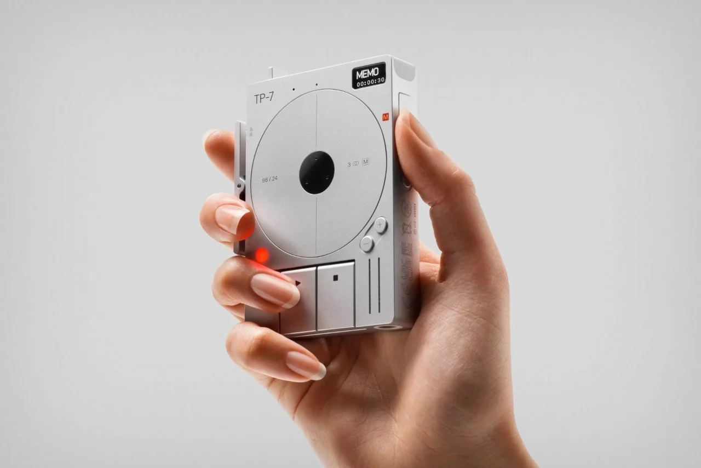
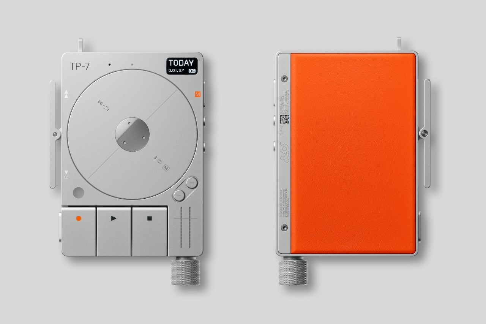
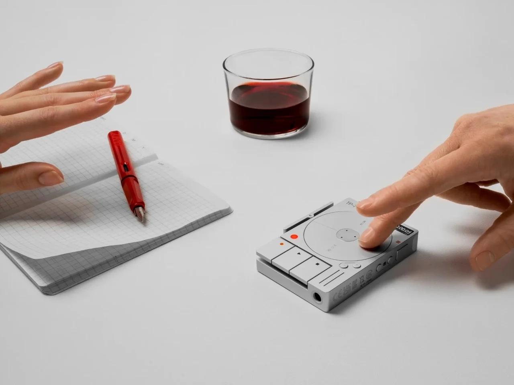
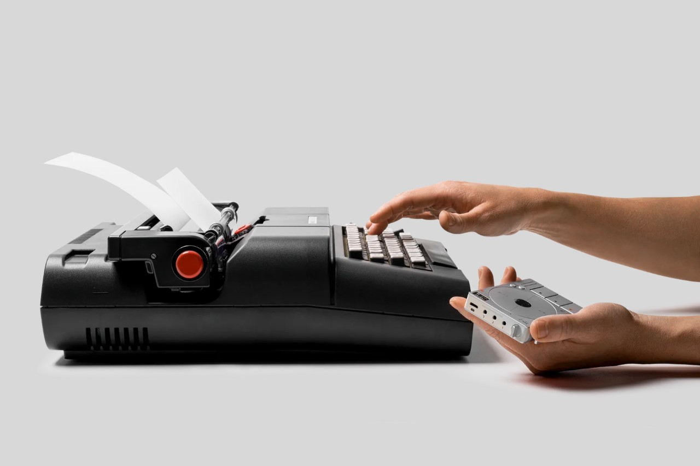
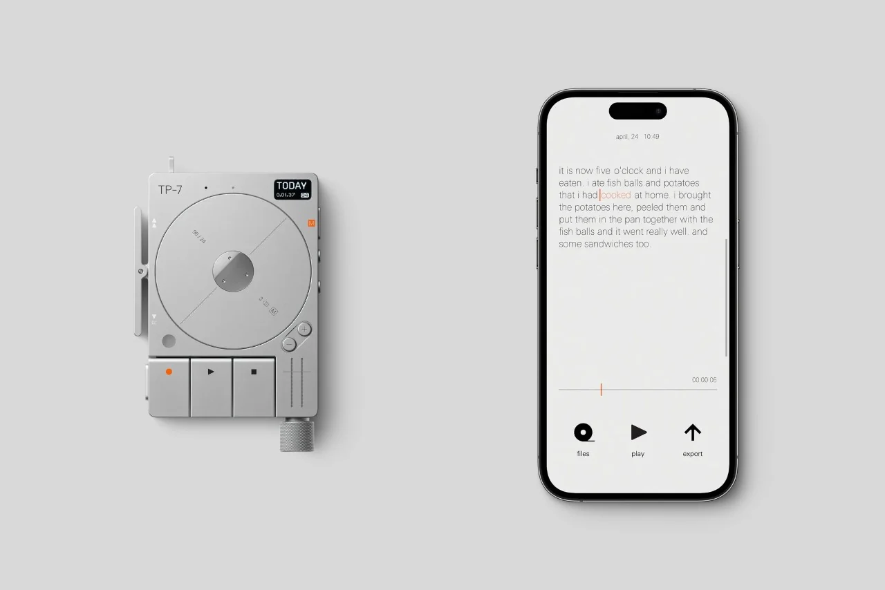
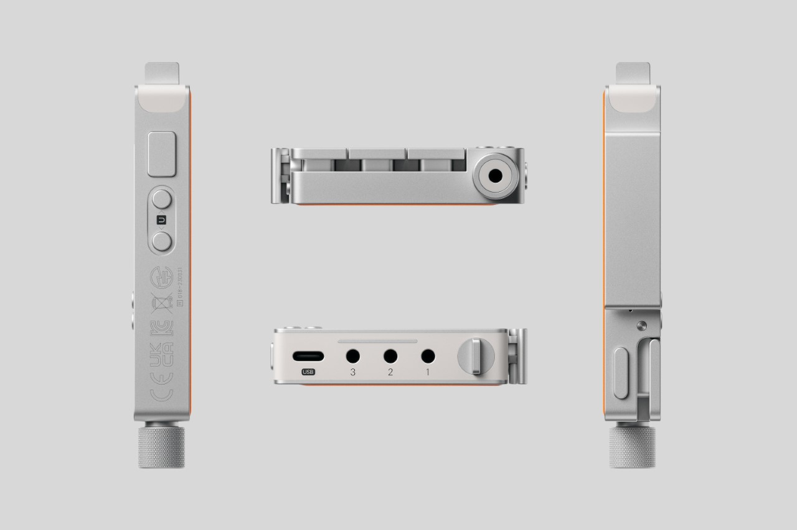
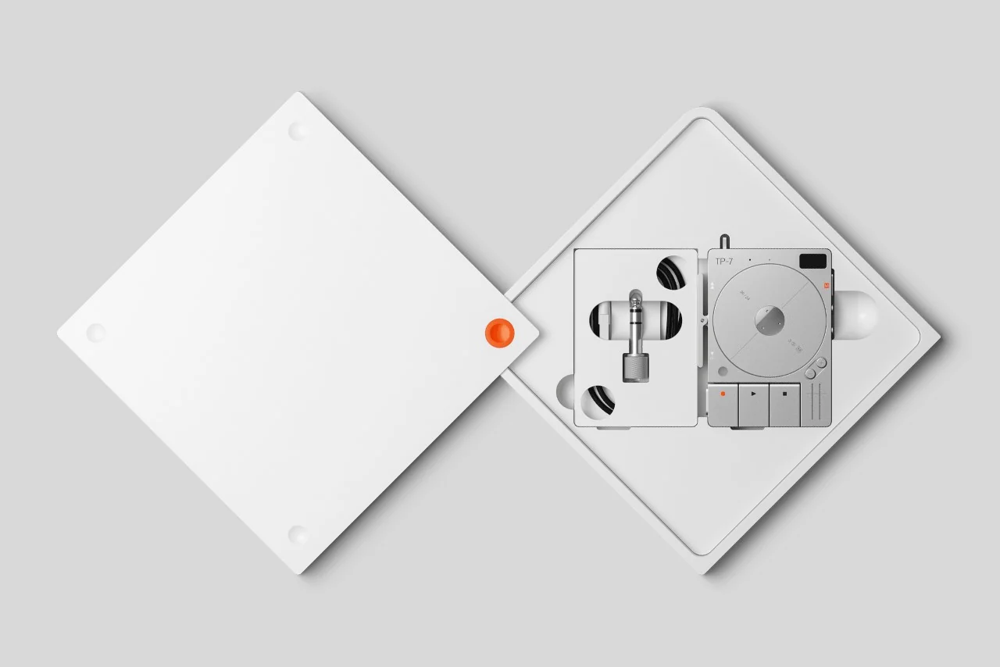

TEENAGE ENGINEERING’S LATEST AUDIO GADGET LOOKS LIKE AN ALTERNATE-UNIVERSE IPOD

In hindsight, it does seem natural that Teenage Engineering would launch a handheld Field Recorder just a week after debuting their CM-15 condenser microphone. Designed to be a part of their broad range of audio recording, production, and mixing tools, the TP-7 is an incredibly minimalist field recorder that looks like a spiritual successor to Apple and Braun’s design language. Built on the modern dictaphone, a handheld recorder used by journalists to record interviews, the TP-7 comes with three incredibly large buttons that are reminiscent of the Walkman days. Above the buttons is a spinning disc that turns during recording and playback, imitating the way tape recorders and CD players used to turn while in use. A perfect bit of future nostalgia, this one…


Styled like a hi-fi audio player, the TP-7 is, in fact, a tiny recorder that can record and playback audio, making it great for podcasts, sample recording, music production, vlogging, and journalism. Its design is a combination of nostalgic, with clicky buttons, vintage details, and a palpable lack of touchscreens, and simultaneously cutting-edge, given its ability to record as a standalone device as well as support three separate inputs using aux-ins on the top. Moreover, the TP-7 comes with an iOS app that can automatically transcribe all your recordings, saving you the hassle if you’re a journalist or a vlogger/video-podcaster looking to provide subtitles along with your media.

The TP-7 is designed to fit snugly in your hand, allowing your fingers to effortlessly navigate the controls. Aside from your main buttons on the front, the device also has a rocker switch on the side that lets you fast-forward or rewind recordings. Your thumb is responsible for recording memos, and the pinky selects the mode. At the center of the TP-7 lies the motorized tape reel, which rotates meditatively as you’re recording or during playback. This reel is a finely crafted piece of engineering, featuring a brushed motor with ball bearings and a highly responsive hall sensor that allows for a lifelike recording experience. Additionally, the reel can be used for scrubbing, pausing, menu navigation, and acts as a subtle visual indicator during playback and recording.

The TP-7 features a built-in microphone and speaker, connected to a 24-bit/96 kHz USB audio interface. The top of the gadget sports three audio inputs, letting you hook three microphones, music instruments, or other devices that let you output sound. 128 gigabytes of internal memory keep audio recordings on your TP-7, or you can use the main audio output on the bottom (a 1/4″ jack with a 3.5mm adapter) to output your sound to a mixer or to headphones. An iOS app lets you access the TP-7’s recordings too, and transcribe them in real-time, although there’s no clarity if it supports multi-lingual transcription. Finally, a 7-hour battery keeps the TP-7 going even through the longest of recording sessions, and a USB-C port lets you charge your device or even transfer data.

The TP-7 joins all of Teenage Engineering’s other audio recording gear, which also includes the OP-1 field synth, the TX-6 stereo mixer, and the CM-15 condenser microphone. At $1499, though, the TP-7 field recorder doesn’t really come cheap… but that’s the price you pay for great design and even greater tech.
